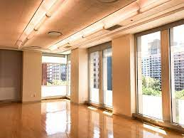

We are a school club focuses on the art of breakdancing, also known as breaking. The origine of breaking is said to have originated in New York City during the late 1960s and early 1970s. It is an especially energetic and acrobatic form of dance that often uses elaborate choreography, footwork, and movements. Breakdanceing is one of the five elements of Hip-Hop, the other four are MCing, DJing, Graffiti, and the knowledge of its culture.

Footwork in breaking is when a breakdancers is down on the floor using their hands for support as they move their legs through a variety of breaking footwork steps. Some examples of footwork steps are 6 steps, 3 steps, and kick out.
Transitions are the movements breakdancers use to get in and out of their moves, or to combine with other moves to form a combination of choreography. Some examples of transitions are sweeps and spins.

A Freeze is when a breakdancer makes, hits and holds a solid shape with their body for a few seconds. The freeze are usually done to hit a prominent sound or an ending for a sequence of moves. Some examples of freezes are the baby freeze, forearm freeze, and headstand.

Power moves are the most iconic element of breaking. Generally a power move is when a breakdancer launch their whole body into a continuous rotational motion, while balancing on their hands, head or sholders. Some examples of power moves are flare, windmill and headspins.
Our weekly sessions are every Saturday from 4pm to 6pm located at Kimmel Center room 606! All level of breakdancer are welcomed!
